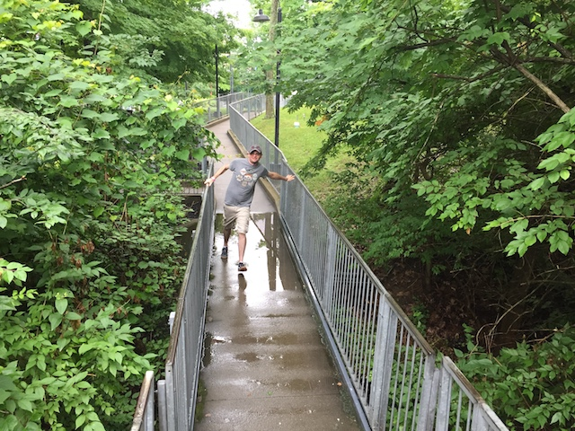
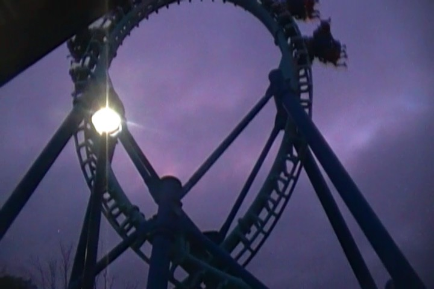
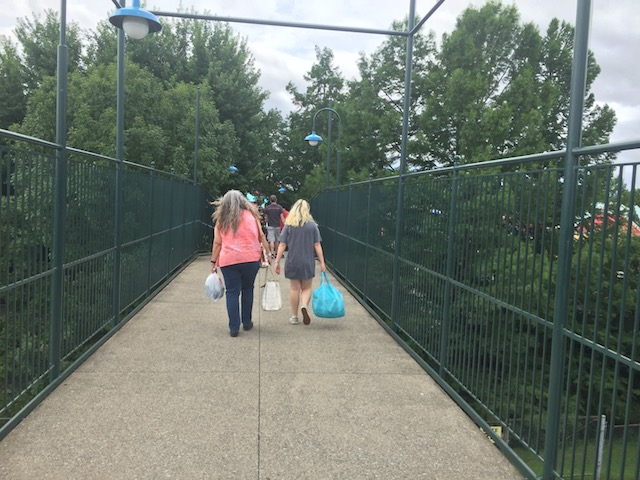
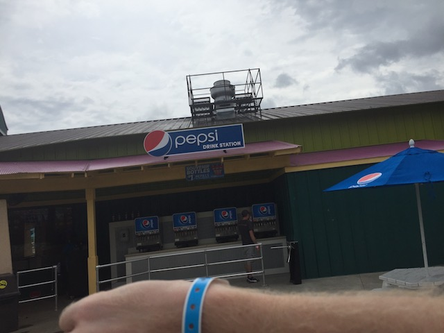
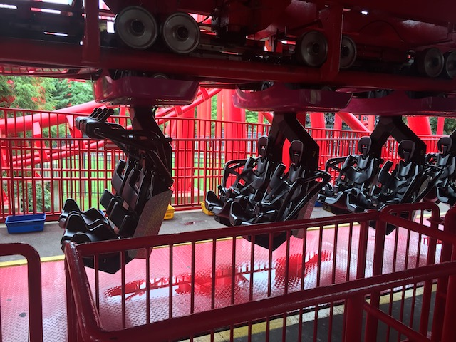
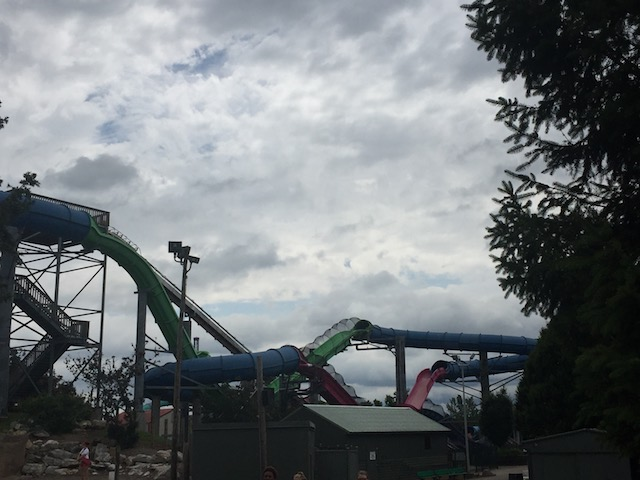
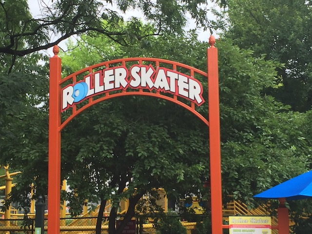
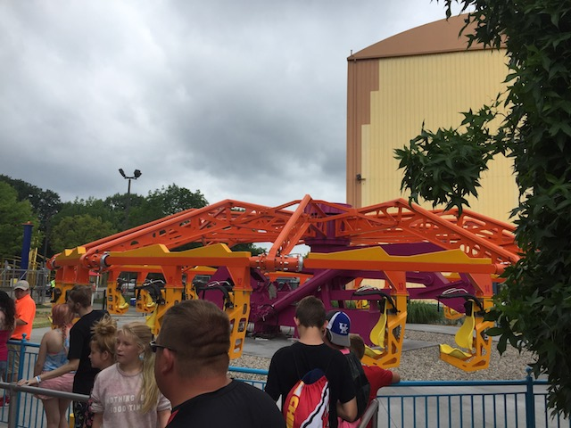
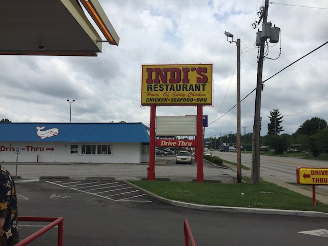

| |
Mini Midwest Trip 2018
Cedar Point Kentucky Kingdom Holiday World Kings Island
 Cedar Point was great and all, but it's time to move on to the rest of the trip, as we have 3 more parks to tackle. Oh, and just a quick reminder. Outside of Cedar Point, the rest of the state of Ohio is sh*t.
Cedar Point was great and all, but it's time to move on to the rest of the trip, as we have 3 more parks to tackle. Oh, and just a quick reminder. Outside of Cedar Point, the rest of the state of Ohio is sh*t.
We actually stopped for a bonus night at Kings Island. Now, I'm barely going to cover this, as there's a whole Kings Island update later on for our full day at the park, and most of the stuff from tonight, I'll just cover that during the Kings Island update. But the stuff that just wouldn't fit in the Kings Island update, I'll bring up here.

Good luck trying to get across that river in Bat's line Evan. =P

All right. The ONE ride we rode during the bonus night at Kings Island, but not on the full day is Invertigo. So we'll talk about that in the Kentucky Kingdom update.
 As one of the few rides where you actually get to see your friends reaction to the ride, this makes for some interesting fun.
As one of the few rides where you actually get to see your friends reaction to the ride, this makes for some interesting fun.
 I'm kind of sad that these rides are dissapearing and becoming more rare (Thank you Dorney Park) as even without the cool seating, it's still a pretty fun ride.
I'm kind of sad that these rides are dissapearing and becoming more rare (Thank you Dorney Park) as even without the cool seating, it's still a pretty fun ride.
Thanks for a fun bonus night Kings Island. It was a lot of fun and we actually got on everything we wanted. Looking forward to coming back and spending a full day on Thursday.
YAY!!! New state credit! With Kentucky now under my belt, 40 states down, 10 more to go. The problem with getting those last 10 is that most of those 10 are the states I have no desire to visit. Both Dakotas, Nebraska, Kansas (I HAD an excuse to go until you f*cked it up Schlitterbahn), Mississippi, and West Virginia. Just some of the states I still need. And damn, do I not want to go to those places. Oh well. I'm sure I'll find some fun stuff in those states. Plus, there are still a couple more states that I actually have interest in to visit.
 We're in Florence Y'all! No, not Florence, Italy. I WISH I was back there. Florence, Kentucky. Hey, their watertower is so famous, that it even has its very own Wikipedia Page.
We're in Florence Y'all! No, not Florence, Italy. I WISH I was back there. Florence, Kentucky. Hey, their watertower is so famous, that it even has its very own Wikipedia Page.
All right. Enough beating around the bushes. We came to Kentucky for one main reason (And No. It's not for the sake of boosting my state credit count).
 Yep. We're visiting Kentucky Kingdom. One of the few parks in America that I still had yet to visit, I get to knock off today.
Yep. We're visiting Kentucky Kingdom. One of the few parks in America that I still had yet to visit, I get to knock off today.
 There's two rides here that I'm really looking foreward to, and it's time for one of them. Lightning Run.
There's two rides here that I'm really looking foreward to, and it's time for one of them. Lightning Run.
 So Lightning Run has been frequently touted as an airtime machine, and the closest thing to a Mega-Lite in the U.S. So I'm definetly looking foreward to this.
So Lightning Run has been frequently touted as an airtime machine, and the closest thing to a Mega-Lite in the U.S. So I'm definetly looking foreward to this.
OK. So Lightning Run is sort of like a Mega-Lite, but more crossed with Phantom's Revenge, and it definetly has its own style and feel. Sadly, it's not as good as the Mega-Lites (Can't wait to ride Kawesemi this Fall).
 It definetly seems to have more turns and laterals than the Mega-Lites.
It definetly seems to have more turns and laterals than the Mega-Lites.
 While it didn't quite meet my expectations, Lightning Run still is a very good ride and had a lot of good airtime. I'm hoping that we just caught it in the morning when it didn't have a chance to warm up and it's better later in the day.
While it didn't quite meet my expectations, Lightning Run still is a very good ride and had a lot of good airtime. I'm hoping that we just caught it in the morning when it didn't have a chance to warm up and it's better later in the day.

Kentucky Kingdom has a very odd park layout where the park is split on two sides of the road and you have to cross a bridge to get from one side to the other.
No. The park is not lazy and just didn't bother to put up their sign. I literally saw this thing blow over thanks to the wind.
 We have another credit to get. Up next, Thunder Run.
We have another credit to get. Up next, Thunder Run.
 Meh. It's not great. But it's not terrible either. Just a middle of the road woodie (though it definetly has some turns that shuffle).
Meh. It's not great. But it's not terrible either. Just a middle of the road woodie (though it definetly has some turns that shuffle).

So Kentucky Kingdom had this special ticket for people out of state, where for a cheaper price, you could buy tickets that not only got you in the park for 2 days, but also gave you a wristband for free drinks (Gee, I wonder if we're going to another park with free drinks today) for a price that's cheaper than just a regular ticket. That's always appreciated. And considering that we're from California, yeah. We took advantage of this out of state bargain.
 Oh god. We're now doing T3.
Oh god. We're now doing T3.

So...T3 has always had the reputation of being one of the roughest and worst SLCs. So much so that the new owners who resurected the park went redid T3, giving it new trains that honestly, look more like fighter pilot seatbelts than any coaster restraint, with the goal being to reduce headbanging. #1. Very happy to see the park trying to improve their rides and actually do something to try and curb headbanging. #2. Oh god! It was that bad!? Now I'm afraid of what it's gonna be like now.
 While the restraints do stop headbanging, so it's not painful. But there is more to roughness than headbanging, and boy is this ROUGH AS HELL!!!
While the restraints do stop headbanging, so it's not painful. But there is more to roughness than headbanging, and boy is this ROUGH AS HELL!!!
 This thing seriously felt like it was made with rubber bands and chewing gum. It jolted through the inversions and it just shook and rattled you (I imagine this thing would've been Dragon or Gouderix bad with the old restraints). I think this was one of the rare rides that actually made me go "OH SH*T!!!" out loud due to sheer roughness. Yeah, I appreciate the new restraints, but that's a one and done for me.
This thing seriously felt like it was made with rubber bands and chewing gum. It jolted through the inversions and it just shook and rattled you (I imagine this thing would've been Dragon or Gouderix bad with the old restraints). I think this was one of the rare rides that actually made me go "OH SH*T!!!" out loud due to sheer roughness. Yeah, I appreciate the new restraints, but that's a one and done for me.
Please don't kill what little landscaping we have. We hope to someday have some fully grown bushes over here.
I see you worlds biggest trap-door slide. =)

So the Kentucky Kingdom water park looks incredibly good. Between Deluge and the Monster Trap Door, the only reason we didn't do it is because we don't have the time. But we'll be at Splashin Safari later today. So it's all good.
Hmm. I feel like there's one ride here we've been ignoring. I wonder what that could be.
 Yeah. It's time for us to check out their RMC. Storm Chaser.
Yeah. It's time for us to check out their RMC. Storm Chaser.
 Oh yeah. Another thing about Kentucky Kingdom. It is RIGHT next to the Louisville Airport. And I don't just mean it's in the same town. It's LITERALLY a stones throw away. So expect to see some low-flying planes.
Oh yeah. Another thing about Kentucky Kingdom. It is RIGHT next to the Louisville Airport. And I don't just mean it's in the same town. It's LITERALLY a stones throw away. So expect to see some low-flying planes.
 I've always wanted to try one of those Barrel Roll Drops RMC has recently made, and yeah. Those things are incredibly fun. Definetly up there as far as one of the best first drops.
I've always wanted to try one of those Barrel Roll Drops RMC has recently made, and yeah. Those things are incredibly fun. Definetly up there as far as one of the best first drops.
EJECTOR AIR!!!
I've heard mixed things about Storm Chaser, ranging from one of RMCs best rides to one of their weaker coasters. I'm happy to report that I'm in the "Storm Chaser is awesome!" camp. Seriously, this ride kicks ass! =)
 I know its easy to get spoiled and jaded when you just rode Steel Vengeance yesterday. And yeah, that's still easily the best Steel RMC and possibly the best RMC overall. But Storm Chaser was still a great little coaster.
I know its easy to get spoiled and jaded when you just rode Steel Vengeance yesterday. And yeah, that's still easily the best Steel RMC and possibly the best RMC overall. But Storm Chaser was still a great little coaster.
Not only was the airtime really strong, but the laterals were strong too, and the inversions were snappy. Honestly, the only issue I have with it is that it's a little on the short side. Other than that, I love it.

Just one more credit for me to get here.
Cha-Ching.

So one of the unique things at Kentucky Kingdom is their enterprise. It's basically a modern take on it. Same ride, just with more open seats. I personally prefer the old ones (which this replaced), but this is still fun too.
We wanted to grab a 2nd ride on Lightning Run to see if it warmed up better, but the line grew too long. I know it's only 10 minutes, and normally, I'd just wait it. But, we had to squeeze this park visit in only a couple hours and have another park to get to today. So with our tight schedule, we have to hit the road and can't wait in that line.
 Bye Storm Chaser. I hope to get more rides on you soon.
Bye Storm Chaser. I hope to get more rides on you soon.
It's mildly amusing, but mostly depressing that the KFC in Ventura is nicer and in better shape than the KFC in Kentucky. Louisville, Kentucky. Not some random city in the middle of nowhere Kentucky, the biggest city in the state.

We decided to try out Indi's, which is a Fast Food place that is exclusive to Louisville, and a couple nearby Kentucky cities, and it's always good to try local places. Eh, it's all right. Decent fast food, but far from the best. And this particular one felt like the size of a closet.
Holiday World
Home
|